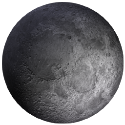

Знайомство із Сонячною системою

Сонце

Меркурій

Венера

Земля

Місяць

Марс

Юпітер

Сатурн

Уран

Нептун

Плутон
На головну
Сатурн
 Сатурн був богом врожаю у стародавніх римлян. Відстань до Сонця — 1425,6 млн. кілометрів.
Сатурн був богом врожаю у стародавніх римлян. Відстань до Сонця — 1425,6 млн. кілометрів.
Подібно Юпітеру, Сатурн газоподібна планета, що складається з водню. На її поверхню ллють аміачні дощі. В атмосфері Сатурна метану більше ніж у Юпітера.
Сатурн — планета величезна, друга за розмірами після Юпітера і в 9,5 рази більша від Землі. Температура на рівні хмар — льодова — 180 °С.
На відміну від Юпітера Сатурн оточений тисячами кілець кольору паленого цукру, які утримуються на одному місці гравітаційним притяганням. Ці кільця складаються з частинок льоду і каміння розміром від пилинок до валунів. Учені не впевнені, ці кільця — залишки матерії, які не ввійшли до складу планети, чи це супутник, розірваний гравітаційною силою Сатурна, яка ненабагато більша земної.
День на Сатурні довший, ніж на Юпітері, — 10 годин 39 хвилин. Через велику віддаленість від Сонця йому потрібно 30 земних років, щоб зробити повний оберт навколо нього.
Вчені передбачають, що метан присутній також і на Титані, найбільшому з 21 супутника Сатурна, — у твердому, рідкому і газоподібному стані, як вода на Землі. На Титані сніг чи дощ можуть випадати з метанових хмар. Ріки метану біжать по метанових льодовиках. Атмосфера Титану могла бути подібною до земної 4 млрд. років тому. Проте його температура дуже низька для існування життя.